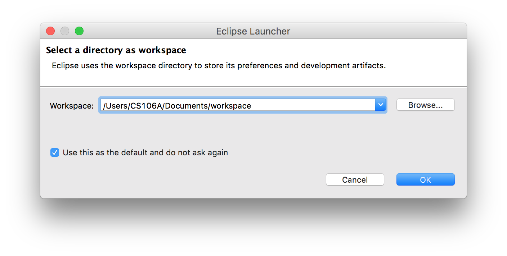
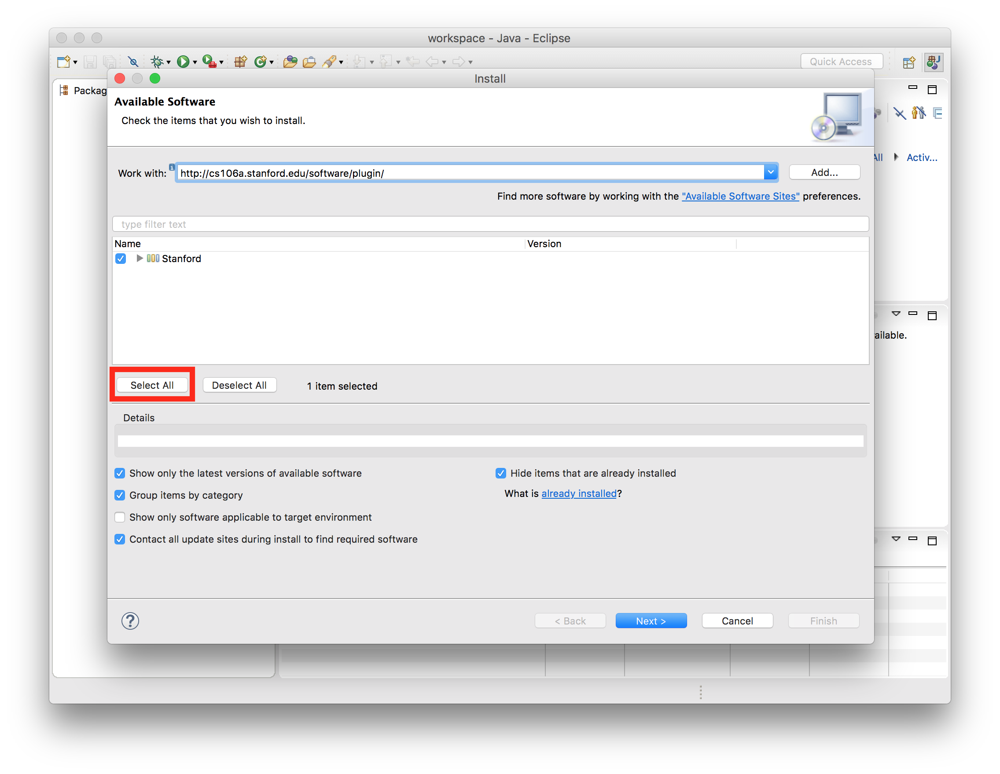
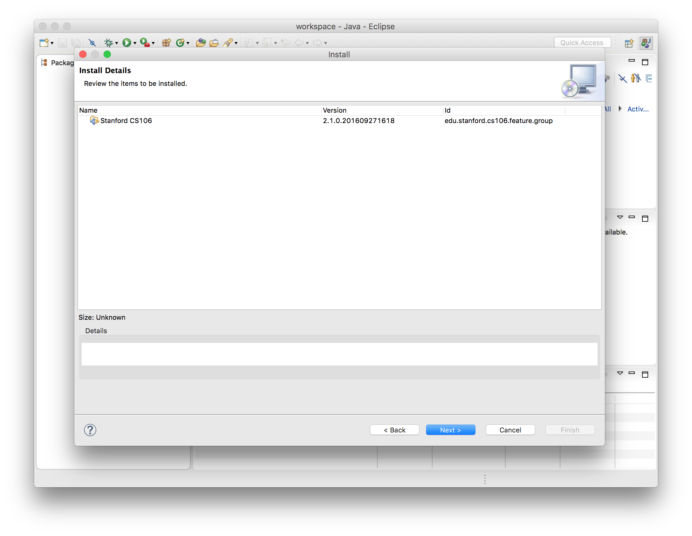
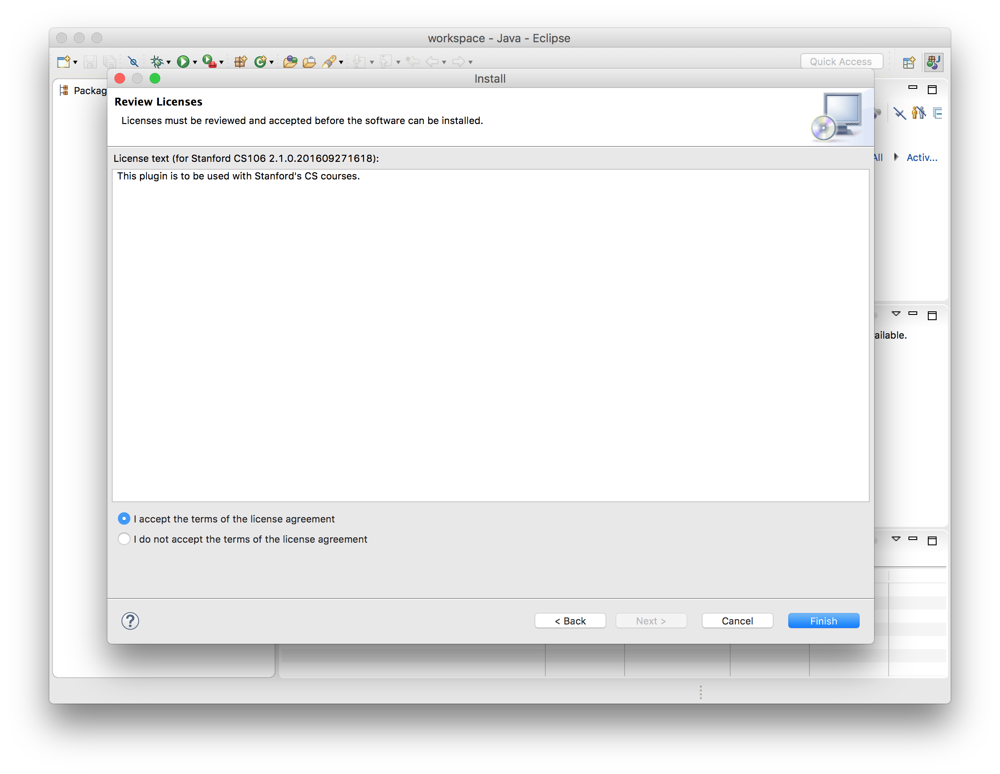
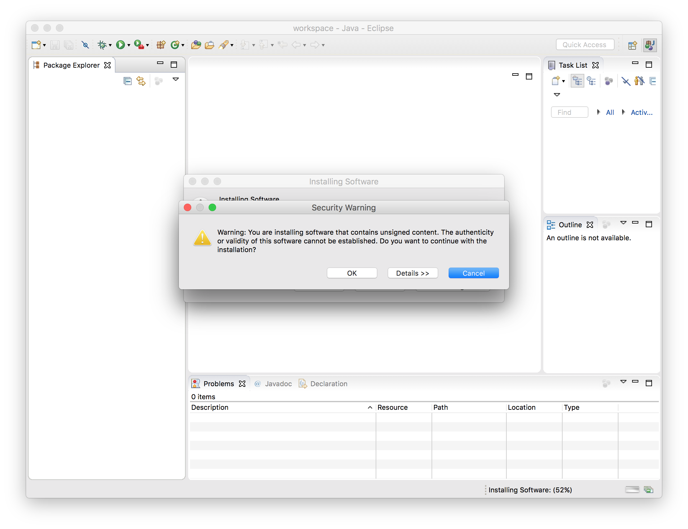
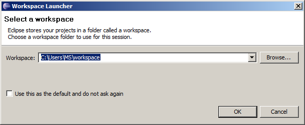
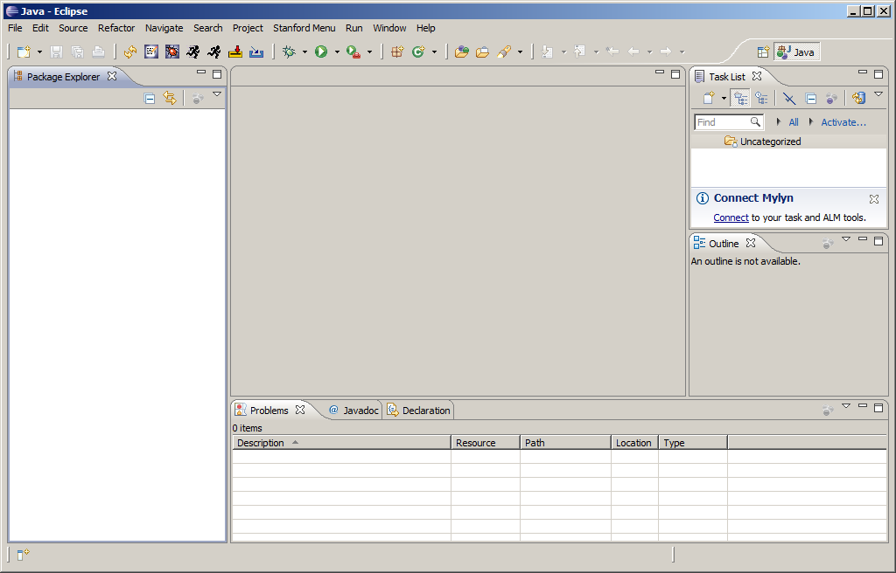

In CS106A, we'll be using Stanford's customized version of
Eclipse to build our programs. Eclipse is an enormously popular
industrial strength Java environment with many
features. Fortunately, Eclipse is also open source -- anyone is
free to change Eclipse to work the way they want. We have taken
advantage of that freedom to install special Stanford features
into Eclipse, tailoring it specifically for CS106A. This
document gives instructions on how to get started using Stanford
Eclipse. Please pay close attention to these instructions and do
not skip steps!
Contents
Mac Installation |
Windows Installation |
I need help!
Installing Eclipse on a Mac
Stanford Eclipse will only work on Mac OS X version 10.6 or higher. If you don't have that version of the operating system, you'll need to either upgrade or do your class work in a public cluster.
- Download and install the Java SDK installer for Mac
- Download the Mac version of Eclipse
- Double-click on the file eclipse-mac.tar.gz to unarchive Eclipse (You can delete eclipse-mac.tar.gz afterwards).
- Drag the Eclipse app into the Applications folder on your Mac.
- Drag the Eclipse icon from there to your Dock to create a shortcut.
- Click on the icon in the dock to open Eclipse. If you see an error that says Eclipse "can't be opened because it is from an unidentified developer," right-click on the Eclipse icon and select "open" instead. You will be able to open Eclipse without right-clicking from now on.
- When you run Eclipse for the first time, you may get a screen that looks like this:

A workspace is just a directory that Eclipse will use to place new projects in. In 106A you won't have to make any new projects from scratch. We will always give you skeleton projects for your assignments, so you don't need to worry about where the workspace is. The suggested location is fine. Click the Use this as the default and do not ask again checkbox, and then click OK.
- Once Eclipse has started, you can close the "Welcome" tab using the "X" in the top left. Click Help -> Install New Software.
- In the "Work with" text box, type https://web.stanford.edu/class/cs106a/resources/plugin/ and press Enter.
- Click "Select All," then click Next.

- Click Next again.

- Click "I accept the terms of the license agreement," then click Finish.

- Click OK when you see the warning about installing unsigned content.

- Click Yes when asked to restart Eclipse.
-
Now that you have Eclipse loaded, your next step is to create a new project in your workspace by importing a skeletal framework that we provide called a starter project. Using starter projects makes your life much easier by allowing you to ignore the many details involved in creating a project from scratch. Every assignment will include a starter project for each problem, and your first task will be to download the starter project from the class website and then import it into your workspace. The details for doing so are described in the handout "Using Karel with Eclipse".
Installing Eclipse in Windows
Our version of Eclipse will run on Windows 7, 8 or 10. In the very unlikely event you have an older version of Windows on your computer, you will need to do your class work in one of the public computer clusters. Before installing Eclipse, you will first need to have a copy of the latest version of the Java JRE (Java Runtime Environment) installed on your computer. Note that Java version 1.8 is the latest version of Java. If you don't know which version, if any, of the JRE you have, or want to upgrade to the latest version, just start at Step 1. We recommend most students at Step 1.
- Uninstall previous versions of the
JRE. Before installing a new version of the JRE, we
recommend that you remove any older copies that may be
installed on your system.
-
If you have Windows 7 or 8, do the following: Click
on Start, then click on Control
Panel, then select Programs and
Features.
If you have Windows 10, do the following: Click
on Start (the Windows icon in the lower
left-hand corner), then click
on Settings (the gear-shaped icon),
then select Apps & Features.
- From the list of programs you see, uninstall
any occurrences of Java/J2SE Runtime Environment, Java
SDK, Java SE Development Kit or Java Update. Note that the
exact program name may
be slightly different or include a version number, but you
generally want to remove anything that includes the text:
Java/J2SE Runtime Environment, Java SDK, Java SE
Development Kit or Java Update. To remove a program, click
on the program name to
highlight it and click the the Uninstall
button.
- Download and install the JRE:
32 bit
version or 64
bit version
After clicking this link a prompt
will appear to ask you whether you want to run or save the
file. Click Run to begin the download and
installation process. If you did not get a prompt to run the
file after the download completed, you should double-click the
file you downloaded to run it manually. If a subsequent
security warning dialog box appears, click Run
(or Yes) to continue with the
installation. The Java JRE installation program should
begin. Do a Typical installation (just use the default setting
in the installation process), and follow the rest of the
instructions given in order to complete your
installation.
- Download Eclipse:
32 bit version
or 64 bit version
Save the downloaded file to somewhere on your hard drive. This may
take a little while as the file is rather large.
- Unzip/extract the contents of the file by right-clicking
on the folder you just downloaded, selecting
the Extract All... option and
typing C:\Program Files as the location to
extract the files to.
Then continue following the steps in the extraction process.
- Create a shortcut to Eclipse on your Desktop for easy
access — Open the C:\Program
Files\eclipse directory, and right-click and
drag the eclipse.exe file (the Eclipse application) to your
desktop and then select the option Create shortcut here.
Note: If you installed the 64 bit versions of the software, and
find that you have issues running Eclipse, we recommend that
you uninstall the 64 bit versions of the both the JRE and
Eclipse and install the 32 bit versions of both.
At this point you should have Eclipse installed and working on your computer. When you run Eclipse for the first time, you may get a screen that looks like this:

A workspace is just a directory that Eclipse will use to
place new projects in. In 106A you won't have to make any new
projects from scratch. We will always give you skeleton projects
for your assignments, so you don't need to worry about where the
workspace is. The suggested location is fine. Click
the Use this as the default and do not ask
again checkbox, and then click OK. Once you do, Eclipse
will start running -- and after what may seem like a relatively
long time -- bring up a screen that looks something like this:

Once you have Eclipse loaded, your next step will usually be
to create a new project in your workspace by importing a
skeletal framework that we provide called a starter
project. Using starter projects makes your life much easier by
allowing you to ignore the many details involved in creating a
project from scratch. Every assignment will include a starter
project for each problem, and your first task will be to
download the starter project from the class website and then
importing it into your workspace. The details for doing so are
described in the handout "Using Karel with
Eclipse".
Having trouble with your installation?
Check out this doc for
, email the Head TA or stop by their Office Hours, or stop by the LaIR. During the first week, you can also stop by the Eclipse Setup Session on Friday 1/13 3-5PM in Hewlett 200.